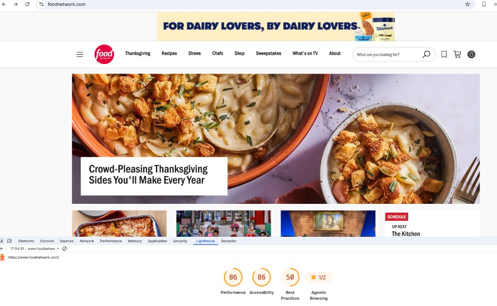
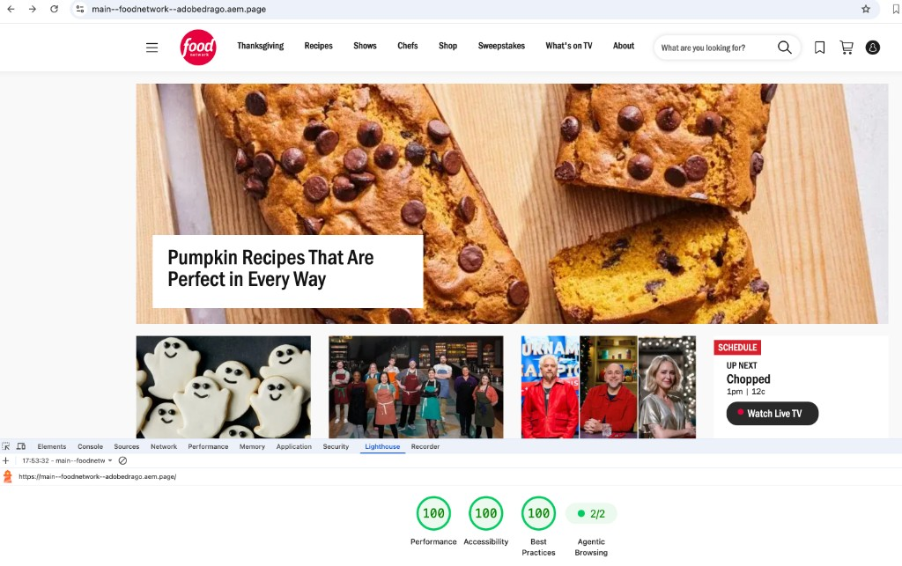
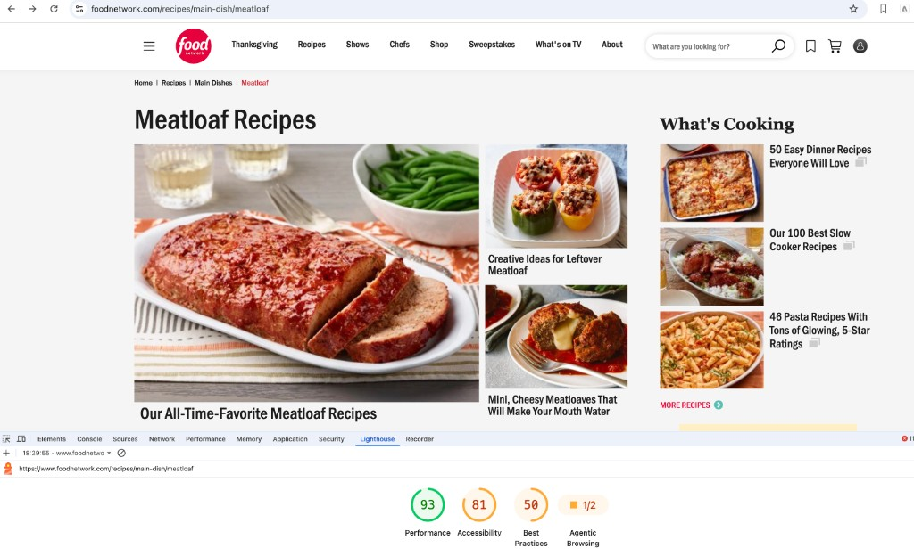
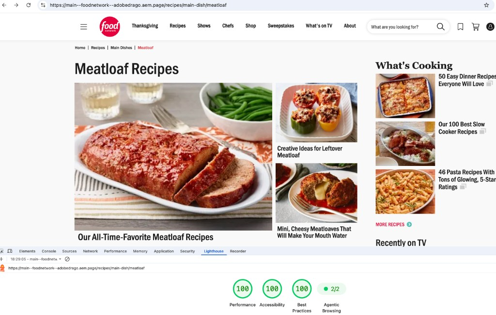

Food Network EDS Pilot
A November 2026 demo POV validating Food Network’s migration to Edge Delivery Services (EDS) — production-matching brand chrome, recipe detail pages filled from live Food Network JSON with authored content taking priority, and the companion experiences (suggestion filters, FN video playback, reviews, notes, shop, newsletter) that complete a recipe page.
Purpose
- Prove a recipe detail migration path where EDS pages resolve a Food Network recipe slug (or authored
recipemetadata), fetch.sni.jsononce viascripts/recipe-data.js, and fill empty info/body fields while authored copy always wins. - Prove site chrome parity with
foodnetwork.com— header flyouts, utilities, dark footer, Franklin Gothic URW type, and brand tokens authored through Document Authoring fragments. - Prove dynamic discovery & media on recipe pages: live suggestion filters (Quick & Easy / Highly Rated / Healthy / Surprise Me), inline Food Network HLS video via
video-playlist, plus actions, reviews, private notes, shop, and newsletter blocks. - Prove home & listing surfaces (editorial homepage, category/recipe hub pages) can ship alongside detail demos on the same EDS codebase.
Core engineering requirements
- Use the EDS block-based model only (
scripts/aem.js+scripts/scripts.js) — no custom block-loader routing beyond stock boilerplate resolution. - Shared recipe client in
scripts/recipe-data.js— path normalization, one.sni.jsonfetch, suggestion payloads, image URL rewriting tofood.fnr.sndimg.com. - Recipe layout needs: auto-apply
sidebarsection styles when recipe blocks are present; split sidebar sections into main well + right rail aroundcards-rail(decorateSidebarSections). - DA / Universal Editor compatibility —
dapreview, UE host detection, and merged UE models vianpm run build:json.
Journeys
Status below reflects the November 2026 demo POV in docs/foodnetwork-demo.html (“Successful Migration …” framing). Confirm with the team if any journey should move off Complete.
| Journey | Validates | Status | Preview |
|---|---|---|---|
| 1 · Header, footer & brand | FN nav/footer chrome · DA fragments · Franklin Gothic · brand tokens | Homepage | |
| 2 · Recipe detail pages | Path resolution · .sni.json fill · authored-first info/body · star ratings |
Candy Corn Waffles | |
| 3 · Suggestions, video & chrome | Live filters · FN HLS video · actions / reviews / notes / shop / newsletter | French Toast | |
| 4 · Home & listings | Editorial homepage · recipe category / hub grids | /recipes · breakfast |
Where the build stands today
Demo workstreams called out in the November 2026 Food Network Demo deck:
| Workstream | What it covers | Status |
|---|---|---|
| 1 · Recipe path resolution | FN slugs with/without -recipe-; optional authored recipe metadata | |
| 2 · Authored content first | JSON fills blanks only; watch-promo shells do not block fill | |
| 3 · Star ratings | FN-style star meter + review count on titles/cards | |
| 4 · Suggestion filters | Quick & Easy · Highly Rated · Healthy · Surprise Me on detail pages | |
| 5 · Recipe page tools | Actions, reviews, private notes, newsletter, shop cards | |
| 6 · Video & recipe body | Inline FN video · ingredients/directions layout · a11y polish | |
| 7 · Header, footer & brand | Production-matching chrome + brand tokens | |
| 8 · Home & listings | Editorial homepage + category/listing pages |
Repository
| Effort | Food Network → Edge Delivery Services migration POV (recipes, brand chrome, live JSON) |
| GitHub repo | AdobeDrago/foodnetwork · default branch main |
| Base | aem-block-collection / AEM boilerplate lineage (@adobe/aem-block-collection in package.json), DA-compatible |
| Dev model | EDS block-based only (scripts/aem.js + scripts/scripts.js) |
| Backend services | None in-repo (no Cloudflare Workers). Live data from www.foodnetwork.com JSON / playback endpoints and food.fnr.sndimg.com images |
| Reference site | https://www.foodnetwork.com |
| EDS demo host | main--foodnetwork--adobedrago.aem.page |
| Testing | Lint-only CI (.github/workflows/main.yaml) — no automated test suite in the site root |
Key references
Live — production (migration source)
EDS demo — AdobeDrago preview
-recipe- · filters · JSON fill
Detail · classic
French Toast
…/french-toast-recipe-1942216
Full recipe chrome · video · actions
Detail
Baked Samosas
…/baked-samosas-…-1952533
Additional migrated recipe sample
Authored path
Demo recipe page
…/recipes/demo-recipe-page
Uses authored recipe metadata to bind a slug
Authoring & repo
fstab.yaml in repo)
GitHub
AdobeDrago/foodnetwork
github.com/AdobeDrago/foodnetwork
Code sync · blocks · scripts
Demo deck
Food Network Demo
docs/foodnetwork-demo.html
Nov 2026 slide deck (also Food_Network_Demo.pdf)
Install & run
-
Clone and installgit clone https://github.com/AdobeDrago/foodnetwork.git cd foodnetwork npm install
Installs ESLint / Stylelint, Husky, and UE JSON merge tooling from
package.json. -
Run the AEM CLIsudo npm install -g @adobe/aem-cli aem up
Starts the standard EDS local dev server at
http://localhost:3000, serving local code against Document Authoring content (da.live/#/adobedrago/foodnetwork/). There is nofstab.yamlin this repo — mount follows the Adobe Drago org/site convention.Alternate. Without a global install:npx -y @adobe/aem-cli up --no-open --forward-browser-logs. -
Rebuild Universal Editor JSON (when models change)npm run build:json
Merges
ue/models/*.jsoninto the rootcomponent-models.json,component-definition.json, andcomponent-filters.json.
Linting & CI
.github/workflows/main.yaml runs npm ci then npm run lint on every push — it does not run a build, deploy, or test step. There is no automated test suite in the EDS site root.
Block-loading routing
Block resolution in scripts/aem.js follows stock aem-boilerplate / block-collection behavior: each decorated block loads /blocks/{name}/{name}.js and .css from codeBasePath. There is no custom block-name remapping or alternate loader in this project — Food Network customizations live in page decoration (scripts/scripts.js) and in the block modules themselves.
Page decoration (scripts/scripts.js)
| Behavior | What triggers it |
|---|---|
buildHeroBlock | Auto-builds a hero from a leading picture + h1. Skips pictures inside authored blocks and skips recipe pages that already have columns-recipe-info / columns-recipe-body (lead photo stays above the title). |
decorateSections | Wraps section children, applies section-metadata styles/datasets (UE/DA richtext-aware). |
ensureRecipeSectionStyles | Re-adds sidebar (and related) classes when recipe/info/body or cards-links blocks are present — templates sometimes drop these styles. |
decorateSidebarSections | Splits .section.sidebar into .section-main + .section-rail starting at the first cards-rail. Safe to re-run after fragments inject rails. |
autolinkModals | Clicks to /modals/ open the modal block instead of navigating. |
| DA / UE hooks | dapreview query param loads DA preview; *.ue.da.live / stage hosts load ue/scripts/ue.js; sidekick loads on aem-sidekick. |
blocks/fragment/fragment.js re-imports decorateMain / decorateSidebarSections after injecting fragment HTML so “What’s Cooking” rails keep the recipe sidebar layout.
EDS blocks
35 decorateable folders under blocks/. Food Network–specific surfaces are grouped first; stock block-collection blocks follow.
Recipe detail & data-driven
| Block | Purpose |
|---|---|
columns-recipe-info | Cook time / yield / nutrition popover bar. Empty cells fill from loadRecipe(); authored values win. |
columns-recipe-body | Title, rating stars, chef photo, ingredients, directions, categories, package/show metadata from JSON when empty; sidebar layout partner. |
cards-recipe | Recipe capsule cards; on detail pages wires live suggestion filters via loadSuggestions. |
video-playlist | Featured player + optional rail; YouTube/Vimeo/media files inline; FN recipe assets stream via HLS like foodnetwork.com. |
recipe-actions | Save / Pinterest / Print / Email / Meal Plan toolbar; share URLs use the canonical FN recipe path. |
reviews | Star meters, paginated reviews, compose UI; “leave a review” deep-links to foodnetwork.com. |
private-notes | LocalStorage notes keyed to recipe path (or page path in preview). |
cards-shop | “Tools You May Need” product grid with outbound sponsored links. |
newsletter | Recipe-of-the-day signup capsule; posts email to FN signup URL. |
breadcrumb | Hierarchy trail matching FN recipe breadcrumb patterns. |
Editorial / home / listings
| Block | Purpose |
|---|---|
header / footer | FN chrome — mega-menu flyouts, utilities, SVG fallbacks; dark footer with collapsible sections. |
hero / hero-boxed | Full-bleed linked hero; boxed SuperLead-style overlay headline (hero-boxed). |
cards / cards-gallery / cards-collage / cards-kicker / cards-feed / cards-profile / cards-links / cards-rail | Editorial card families (gallery, collage feature+stack, kicker promos, article feed + load more, chef profiles, related-page link tiles, right-rail “Recently on TV” with load more). |
columns / columns-promo | Multi-column layouts; image + headline + CTA promo columns. |
Stock / shared utilities
| Block | Purpose |
|---|---|
fragment | Includes authored fragment HTML; re-decorates and re-splits sidebars after inject. |
accordion / tabs / table / quote / form / search / carousel | Block-collection primitives used for FAQ, tabbed content, tables, quotes, forms, site search UI, carousels. |
embed / video / modal | Third-party embeds, generic video, modal dialogs (also auto-linked from /modals/). |
Supporting modules (scripts/)
| Module | Exports / purpose |
|---|---|
recipe-data.js | recipePath, loadRecipe, loadSuggestions, formatMinutes, foodImageUrl, ingredient/direction helpers, rating text. Consumed by columns-recipe-*, cards-recipe, recipe-actions, reviews, private-notes. |
scripts.js | Page bootstrap; exports decorateMain, decorateSidebarSections for fragments. |
aem.js | Stock EDS helpers (decorate/load blocks, sections, header/footer, RUM, pictures). |
delayed.js | Delayed-load stub (empty beyond the import hook). |
context.js | DA context editing helpers (contenteditable on headings/paragraphs). Loaded by DA conventions rather than a static importer in blocks. |
sidekick.js | Sidekick experimentation plugin toggle. Imports NX_ORIGIN from scripts.js — that export is currently missing in this checkout (worth a follow-up if Sidekick experiments are needed). |
Lighthouse comparison — Live vs EDS
Chrome Lighthouse captures for the production site vs the AdobeDrago EDS preview. Both EDS surfaces land at 100 / 100 / 100 (Perf / A11y / BP). Live foodnetwork.com scores 86 / 86 / 50 on the homepage and 93 / 81 / 50 on Meatloaf Recipes.




Journey 1 — Header, footer & brand Complete
Site chrome migrated to match foodnetwork.com: logo, primary nav, search, Saves, Shopping List, profile utilities, desktop hover flyouts (including TV schedule rows), mobile hamburger, dark footer, and Franklin Gothic URW via styles/brand.css tokens (accent #f63, teal #5ac0b8).
-
Header matches production patterns
blocks/header— flyouts, utilities, local SVG fallbacks when DA images fail. -
Footer + brand tokens
blocks/footer+styles/brand.css/ fonts underfonts/. -
DA-authored nav/footer fragmentsPublished via Document Authoring; UE models under
ue/models/.
Journey 2 — Recipe detail pages Complete
Recipe detail pattern: resolve path from URL or authored recipe metadata (slugs with or without -recipe-), one .sni.json fetch, fill title/rating/author/ingredients/directions/categories when empty, keep authored headings and Nutrition Info popover as authored.
| Step | Path / module | What happens |
|---|---|---|
| 1 | recipePath() | Normalize metadata or pathname to /recipes/…(-recipe)?-<id>. |
| 2 | loadRecipe() | Fetch https://www.foodnetwork.com{path}.sni.json once. |
| 3 | columns-recipe-info / columns-recipe-body | Fill empty fields; authored content wins; sidebar split via decoration. |
-
Path resolution + authored metadataIncluding demo page at
/recipes/demo-recipe-page. -
Authored-first JSON fillWatch-promo shells no longer block fill; JSON headings use “Ingredients:” / “Directions:” only when generated.
-
Star ratingsFN-style meter + review count from recipe JSON.
Journey 3 — Suggestions, video & recipe chrome Complete
Related-recipe discovery, Food Network playback, and companion blocks that complete a detail page.
-
Live suggestion filters
cards-recipe+loadSuggestions— Quick & Easy, Highly Rated, Healthy, Surprise Me whencolumns-recipe-bodyis present. Authored cards remain the default rail. -
Video playlist
video-playlist— featured player, optional rail, FN HLS playback. -
Companion chrome
recipe-actions,reviews,private-notes,newsletter,cards-shop.
Journey 4 — Home & listings Complete
Editorial homepage and recipe category/listing pages published alongside the detail demos, using the card/hero/promo block families.
-
Homepage editorial
hero/hero-boxed, collage, kicker, gallery, feed patterns. -
Category / hub listingse.g.
/recipes,/recipes/breakfaston the EDS preview host.